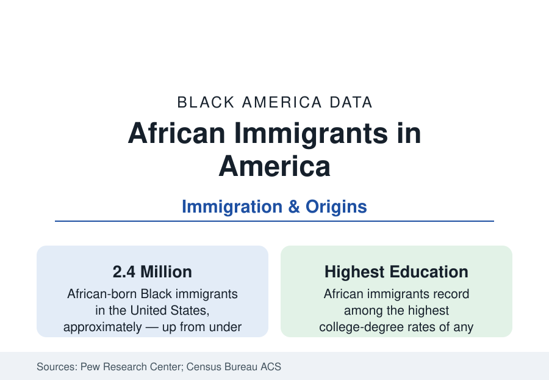

Black Census
African Immigrants in the United States: The Fastest-Growing Black Stream
About 2.4 million Black immigrants were born in Africa — the fastest-growing segment of Black America, with the highest education rates in the file. The Pew and Census data.

The fastest-growing stream of Black immigration runs from Africa itself. The Pew Research Center's census analyses count roughly 2.4 million Black immigrants born in Africa — a population that has multiplied several-fold since 2000 and now forms a majority of the Black foreign-born — drawn disproportionately from Nigeria, Ethiopia, Ghana, Kenya, and Somalia, and recording educational attainment at the top of the immigrant distribution. This article reports the African immigrant data, the modern stream remaking Black America's composition.
Origins and the Visa Channels
The origin map follows the channels. Nigeria is the largest source — the professional and student streams of Africa's most populous nation, concentrated in the Houston, Dallas, New York, and DC data of the city profiles. Ethiopia follows, its Washington metro community the largest outside Addis Ababa; Ghana and Kenya supply professional and diversity-visa streams; Somalia's refugee resettlement built the Minneapolis, Columbus, and Lewiston communities of the state profiles; Liberia's war-era migration seeded the Northeast's and Minnesota's Liberian towns; the francophone streams (Senegal, Mali, Guinea, Congo) center in New York's Harlem and the Bronx. The channels themselves are the policy data: employment and student visas (the skills-screened admissions system that produces the education numbers), the diversity visa lottery (Africa receives the largest regional share of its visas in the State Department data — a program whose African flow is its defining feature), refugee resettlement (the Somali, Congolese, Sudanese, and Eritrean cohorts), and family reunification compounding each beachhead into a chain.
The Education and Occupation Data
African immigrants' attainment is the file's headline: college-degree rates in the range of forty percent or above in the Pew analyses — above the U.S. average and above every other Black population segment — with the Nigerian stream at the distribution's very top (Nigerian Americans are routinely cited among the most educated groups in America, with graduate-degree rates in the high teens). The occupational data translate partially: health care absorbs a large share (the nursing and physician files — African-trained doctors and nurses are a structural pillar of the safety-net workforce), alongside engineering, academia, and a thick entrepreneurial layer (the remittance-funded and community-market businesses of the immigrant corridors). The translation is partial because the credential-recognition system leaks: the 'brain waste' literature documents immigrant professionals — engineers driving, physicians assisting — at rates the licensing data make visible, the discount the second generation's data then recover.
Economics: Income, Remittances, and the Two-Way Ledger
African immigrant household incomes run above the native-born Black median in the ACS — in several origin groups approaching or exceeding the national median — on the education and two-earner structures, while poverty rates run bifurcated (the refugee cohorts' rates are the file's highest; the professional streams' the lowest). The remittance data run the ledger homeward: the World Bank's flows to Sub-Saharan Africa run in the tens of billions annually, with Nigeria among the world's top remittance destinations — the U.S.-based diaspora's earnings functioning as a development program of measurable macroeconomic weight in the origin countries. Homeownership climbs steeply with years of residence in the longitudinal data, the suburban geographies of the city profiles (Houston's southwest, Atlanta's east, the DC suburbs, Columbus's north side) being substantially African-built in the current generation.
The Second Generation and the Identity Data
The demographers' live file is the children: the U.S.-born second generation, counted in the census as native-born Black Americans, whose outcomes the longitudinal studies track at or above the immigrant generation's educational trajectory — the 'segmented assimilation' debate's African chapter, with the early data favoring the straight-line success model in education while the identity research records the negotiation (African, Black, American, ethnic-specific) in the survey and ethnographic record. The composition effect on Black America overall is arithmetic and ongoing: the foreign-born and second generation together now approach a fifth of the Black population's growth in the Pew accounting, shifting the whole population's education and income distributions upward at the margin and complicating every trend line in this reference that treats 'Black' as one population.
Reading the African Immigrant Data
African immigration is the Black story's newest volume and its oldest geography — the descendants of the continent, returning by visa and asylum rather than by force, at education levels the receiving country's own schools rarely match. The data describe a population selected for ambition by the channels it survived; what Black America makes of the merger — two diasporas becoming one population in the census tables — is the demography of the next fifty years.
More in Black Census
The Black Population of the United States: Size, Definitions, and Distribution
The Black population of the United States totals 52.8 million — 15.4 percent of the nation. How the Census Bureau defines and counts the population, and where it lives.
Black Median Household Income in the United States
Black median household income stands at $56,490 in the Census Bureau's annual income report — how the figure is measured, how it compares, and what drives it.
The Black Poverty Rate: Levels, Children, and the Long Trend
The official Black poverty rate is 17.1 percent — against 11.1 percent nationally and 7.7 percent for non-Hispanic White Americans. How poverty is measured and what the data show.
Source: Pew Research Center analyses of U.S. Census Bureau data; Migration Policy Institute; American Community Survey.